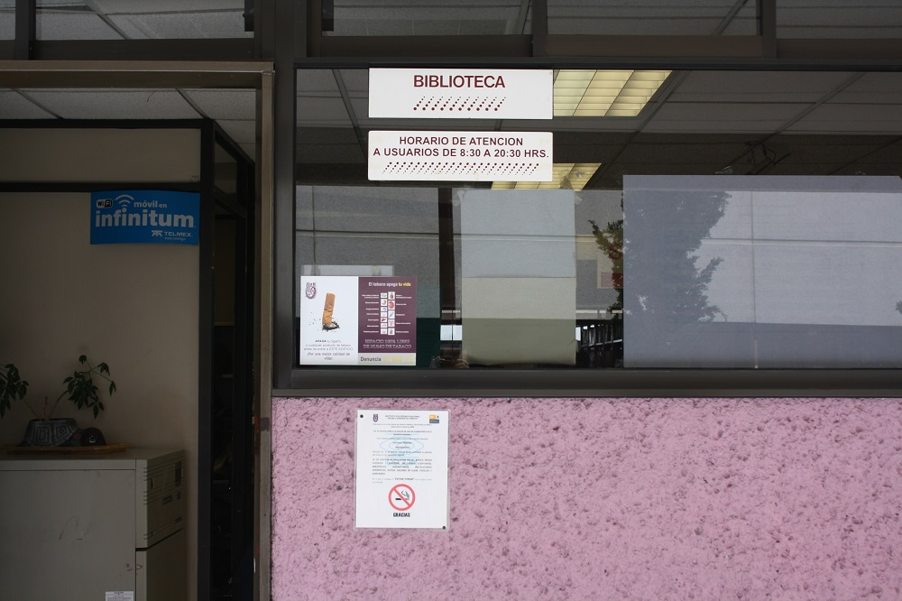

Como toda historia tiene un principio y ese principio está basado en sueños e ideas que se amalgaman para dar forma a proyectos. Uno de estos proyectos es la ESCUELA SUPERIOR DE CÓMPUTO, con las siglas ESCOM, en donde de forma paralela se han llevado a cabo un conjunto de hechos, aventuras, sucesos que han tenido influencia en los diferentes departamentos que la conforman y sobre todo al Departamento de Información y Documentación, más conocido como: BIBLIOTECA ESCOM.
La ESCOM inició sus actividades el lunes 27 de septiembre de 1993, en cinco salones prestados por la Escuela Superior de Ingeniería y Arquitectura –Zacatenco (ESIA-Z). En uno de estos salones, el profesor José Luis Estrada Haen, de la asignatura de Física, da la primera clase oficial. Al mismo tiempo, en otro salón que aún no se denominaba biblioteca, funcionó como el lugar del conocimiento en donde se albergó una colección, aproximada, de 200 libros, de las áreas de matemáticas, física y cómputo.
A partir de la fecha anterior, la biblioteca se convirtió en una biblioteca nómada debido a los constantes cambios de ubicación en los diferentes edificios que se iban construyendo en la ESCOM. Incluso, la biblioteca del CIC (Centro de Investigación en Cómputo) y Biblioteca ESCOM se fusionaron durante un año. Ambas bibliotecas compartieron acervo bibliográfico, así como personal de trabajo que fue encabezado por la Dra. En Biblioteconomía Blanca Miranda. Un hecho a destacar de esta unión fue el regalo de alarmas y etiquetas especializadas que otorgo el CIC a la biblioteca ESCOM.
Al termino del tercer edificio, ya en las instalaciones de la ESCOM, el 22 de julio de 1997, es el momento en que se le otorga a la biblioteca una ubicación permanente (que continua hasta la actualidad) en la planta baja del mencionado edificio; además, por gestiones del Dr. José Madrid Flores (Director) la biblioteca se integró al organigrama de la escuela, como el Departamento de Información y Documentación, el cual, dirigió (como Jefe de Departamento) la Lic. en Biblioteconomía Beatriz Rico Cárdenas.
Es en este momento cuando se da vida a la nueva biblioteca, se da paso a etiquetar todos los libros y dar así inicio a su propia colección bibliográfica; como anécdota, el ejemplar que quedo marcado como el número uno (39-1) es el titulado “Física para la ciencia e ingeniería” del autor Mckelvey, del año 1980. El prefijo 39 fue asignado por la Coordinadora de Bibliotecas del IPN para una red de bibliotecas del mismo Instituto y el 39 fue asignado a la ESCOM.
Por otro lado, gracias al avance tecnológico la biblioteca ha mejorado sus servicios, por ejemplo, anteriormente solo se contaba con el sistema de “estantería cerrada”, el cual, consistía en resguardar el material bibliográfico al público y sólo se prestaba a los usuarios a través de una papeleta. Sin embargo, hoy en día se han instalado en la entrada arcos magnéticos de seguridad, se han colocado alarmas a los libros y códigos de barras, además, de contar con un sistema de cómputo que permite escanear (con un lector óptico) el código del material bibliográfico así como la credencial del usuario y con ello facilitar los préstamos y devoluciones y al mismo tiempo evitar errores.

Por último, la biblioteca te recibe con las puertas abiertas al conocimiento y al saber; y te invita a que sigas haciendo historia contribuyendo con tus sueños y tus ideas que darán forma a tu proyecto (trabajo terminal) que será conservado y dado a conocer a través de nuestro acervo bibliográfico. Bienvenidos, todos, al recinto del conocimiento y el saber, bienvenidos a la biblioteca ESCOM.
Formar profesionales líderes en saberes de ingeniería, tecnología y ciencias, de la computación, con una visión globalizada; así como contribuir con investigación y desarrollo tecnológico para el crecimiento del país.
Ser la Unidad Académica, líder en la formación de profesionales en ingeniería, tecnología y ciencias, de la computación, con base en un proceso educativo integral, incluyente y eficiente, que responda a su compromiso social.